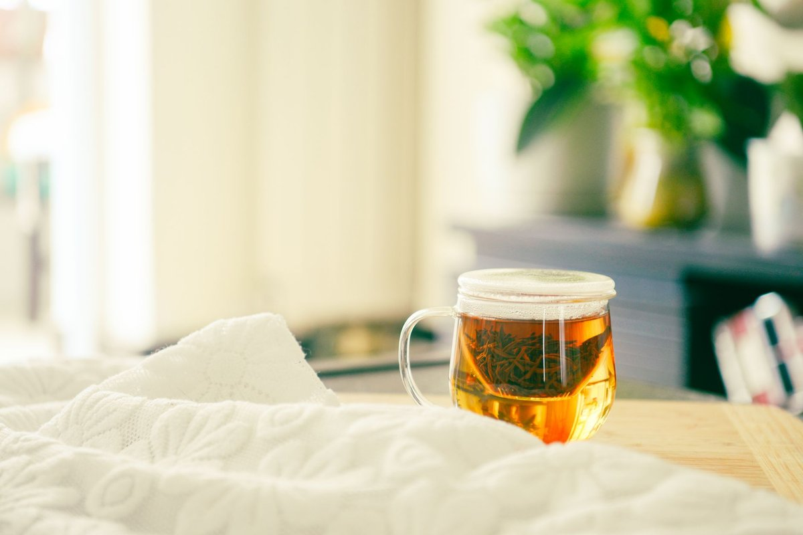
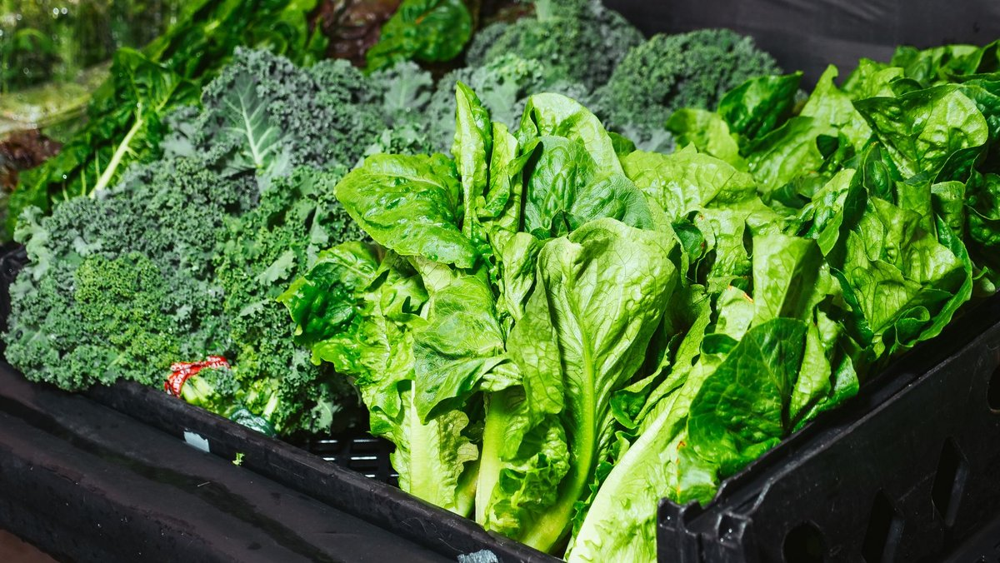
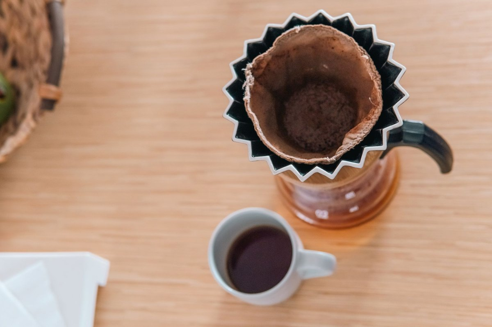

Drinking Tea May Help Protect Your Heart, But There'S A Surprising Catch

Key takeaways
- I used to down three gigantic mugs of piping hot black tea every single morning, convinced I was doing my cardiovascular system a massive favor.
- Then my cardiologist looked at my daily routine during a routine checkup and gently popped my bubble, revealing tha
- Focus on: The Temperature Paradox and Nutrient Absorption.
I used to down three gigantic mugs of piping hot black tea every single morning, convinced I was doing my cardiovascular system a massive favor. Then my cardiologist looked at my daily routine during a routine checkup and gently popped my bubble, revealing that Drinking Tea May Help Protect Your Heart, But There’S A Surprising Catch that I was completely ignoring.
It turns out that how you brew, cool, and serve your daily cup dictates whether you actually absorb those precious heart-protective flavonoids. Let us dive into what science actually says about optimizing your mug for cardiovascular wellness.
The Temperature Paradox and Nutrient Absorption
For years, I thought boiling water extract maximum power from leaves. Research shows that pouring boiling water directly over delicate green tea leaves degrades delicate antioxidants like EGCG.
Furthermore, sipping liquids above 140°F regularly poses unnecessary risk to mucosal linings without adding cardiovascular benefits. Allowing your cup to cool for four minutes preserves both tissue integrity and antioxidant power.
Check out this related healthy tip on managing thermal stress in your daily routine.
The Milk and Sweetener Problem
I loved splashing whole milk into my brew. However, proteins called caseins in animal milk react with tea polyphenols, forming complexes that make it harder for your gut to absorb heart-friendly compounds.
If you prefer a creamier cup, switching to almond or oat milk avoids this specific binding issue. You can read my another practical guide on dairy alternatives for better nutrient uptake.
The 2-Minute Win
Let your freshly steeped tea cool for 180 seconds before taking your first sip, and swap heavy cow's milk for a splash of plant-based milk to maximize polyphenol absorption!
Timing Your Cup Around Meals
Drinking tea directly alongside iron-rich meals like spinach or red meat can inhibit non-heme iron absorption by up to 60 percent. I used to chug iced tea during lunch, only to feel fatigued later because my body was struggling to process dietary minerals.
Spacing your tea intake at least 45 minutes away from major meals allows your body to absorb minerals effectively while still securing polyphenols later. Take a look at this similar wellness insight to improve mealtime digestion.
Pro-Tip: Steep your green tea at 175°F for exactly three minutes. This extracts peak antioxidant levels without releasing excess bitter tannins.
Which Varieties Actually Protect Your Heart?
Hibiscus tea has shown remarkable promise in clinical trials for supporting healthy blood pressure levels already within a normal range. Green tea excels at improving endothelial function and keeping blood vessels flexible.
Rotating between green, black, and hibiscus ensures a broad spectrum of vascular support. Explore our guide on how to stay consistent with this easy daily habit.
Understanding that Drinking Tea May Help Protect Your Heart, But There’S A Surprising Catch changed my entire morning routine for the better. Small shifts in water temperature and steeping time make all the difference.
Feel free to explore more healthy-habits guides to elevate your daily routine without stressed perfectionism.
Educational only — not medical advice.
Recommended Reading
- The Ultimate Guide to Daily Hydration: Boost Energy & Wellness
- Morning Hydration: Unlock Your Day with the Best Water Habits
- Mediterranean Diet May Boost Tiny Proteins That Protect The Heart And Brain
More in healthy-habits

healthy-habitsWhat Nobody Tells You About The Best Foods To Protect Against Atrial Fibrillation
Discover The Best Foods To Protect Against Atrial Fibrillation. Simple, science-backed nutritional swaps to support your
Read article →
healthy-habitsCan Coffee Help Parkinson’S Symptoms? What Science Says
Can coffee help Parkinson’s symptoms? Discover the science-backed benefits of caffeine, motor control research, and prac
Read article →